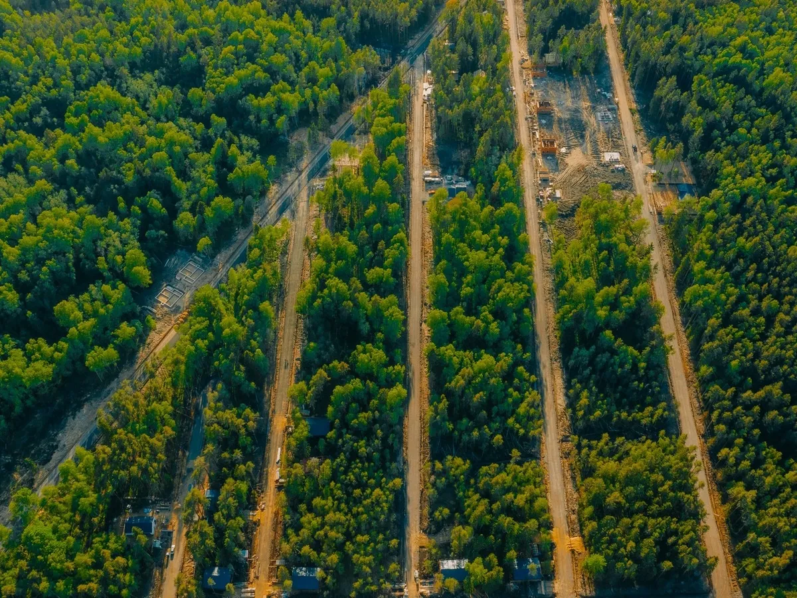

О посёлках «Земля и Свет»
Мы продаём не картинку из рекламы, а готовое место для жизни: дороги построены, свет подключён, документы собраны, а правила застройки и содержания прописаны до сделки.
Посёлок продаётся таким, каким мы его сдали
Каждый посёлок в нашем каталоге полностью построен: дороги с твёрдым покрытием, уличное освещение, выделенная электрическая мощность и документы на землю и коммуникации. Мы не продаём «проект посёлка» — вы приезжаете и видите работающее.
Правила застройки и содержание прописаны отдельным документом, который показываем до брони: какой дом можно строить, где проходят границы, что входит во взнос за содержание и как он тратится. То, что не входит в цену, — отдельным списком, чтобы после покупки не было сюрпризов.

Жить в посёлке, который готов
Коммуникации с первого дня
Свет заведён на участок, дороги и освещение работают. После регистрации можно сразу начинать стройку.
Понятные правила
Застройка и содержание регламентированы: заборы, фасады, парковка — всё известно до покупки.
ИЖС и прописка
Земля под индивидуальное жилищное строительство. Прописка — после постройки и регистрации дома.
Честный взнос за содержание
Сумма и расходы фиксируются в договоре: дороги, освещение, вывоз мусора, обслуживание общих сетей.
Что есть рядом с посёлками
Мы не обещаем «всё рядом», если это не так. По каждому посёлку называем реальное время в пути — проверьте его на просмотре сами.
- Школа
- в 10–15 минутах на машине от всех посёлков
- Детский сад
- в 10–12 минутах на машине, в соседнем посёлке
- Продуктовый магазин
- в 5–10 минутах на машине, есть доставка
- Поликлиника
- районная — в 15–20 минутах на машине
- Железнодорожная станция
- электричка до Москвы — от 12 минут на машине до платформы
Посёлки на карте Подмосковья
Три направления от города: Новорижское, Калужское и Минское шоссе. Маркер — ориентировочный центр зоны посёлков.
Выберите свой посёлок
Карточки с честными фото: коммуникации, дороги, документы и цены. Без рендеров и «примерно».